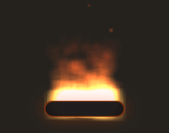
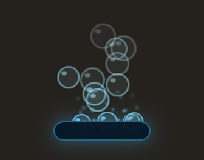
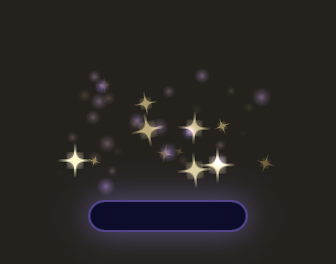
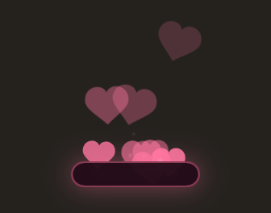
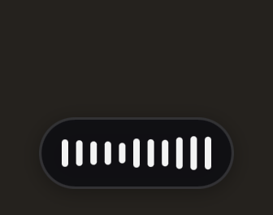
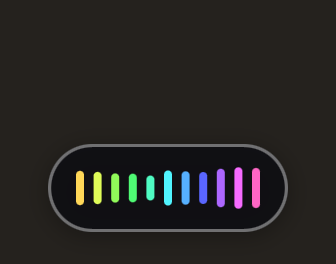
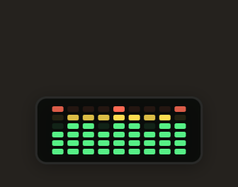

Hold fn, say it, let go. Clean text appears wherever you're typing. Foni is a free, open-source alternative to Wispr Flow for Mac. It turns your voice into text on your Mac, and does the AI clean-up on your own Claude account.
Apple Silicon Mac, macOS 14 or later · 175 MB · MIT license
Running late, I'll be there in ten minutes. Want me to grab coffee?
Foni lives in your menu bar. While you talk, a small pill at the bottom of the screen shows that it's listening.
Hold fn and say what you want to write, in any app: Messages, Mail, Notion, Claude, a browser.
About half a second later it's typed, cleaned up. The "um"s and stutters are gone, and "Tuesday, no wait, Wednesday" becomes "Wednesday".
Hold fn + control to give an instruction: "make this more formal", "translate this to Greek", "draft a reply saying I can't make it Friday".
Wispr Flow is great. Foni does the same job, for free, with your voice staying on your Mac.
| Foni | Wispr Flow | |
|---|---|---|
| Price | Free | Pro: $15 a month, or $12 a month billed yearly. The free plan has a weekly word limit. |
| Speech to text | On your Mac | In Wispr's cloud |
| Without internet | Dictation works | No offline mode |
| AI clean-up | Your own Claude key, an OpenAI-style service, or a model on your Mac | Included |
| AI commands by voice | Included | Command Mode, on the Pro plan |
| Open source | Yes (MIT) | No |
Wispr Flow details from its pricing page, security FAQ and Command Mode docs, November 2026. Foni isn't affiliated with Wispr.
Seven styles for the listening pill, each reacting to your voice. These are real captures, not mock-ups.







The parts that make you stop re-reading what it typed.
Casual in WhatsApp and in AI apps like Claude, formal in email, untouched in code editors. Works in Greek too.
Fix a misheard word right after dictating, like "rabbits" to "RAM", and Foni remembers it.
A safety check throws away any AI edit that rewords you, answers you, or drops a question mark.
Claude with your own key, any OpenAI-style service (OpenAI, OpenRouter, Groq, Ollama), or a free model on your Mac.
English, Greek, Spanish, French, German and 20 more European languages, detected as you speak.
When macOS can't confirm there's a text box, Foni types anyway and also shows a Copy button, so nothing you said is lost.
A FaceTime call or a video playing doesn't get typed too. Your sound comes back when you let go.
On a MacBook Air M4 with 16 GB, with the AI on Claude Haiku.
About two minutes, plus a one-time 2.5 GB download of the speech model.
Not in Foni. Anthropic doesn't allow apps made by others to offer Claude subscription sign-in without its approval (its rule), so Foni uses an API key instead. That's billed separately and pay-as-you-go: for dictation clean-up, cents a month, and Foni's menu shows exactly what you've spent.
No. Speech to text runs on your Mac. If you choose a cloud AI, only the text of dictations that need cleaning up is sent to it, never the audio.
Yes. Foni is open source under the MIT license. The only cost is the AI service you choose, and you can avoid that too by running the AI on your Mac.
Apple Silicon Macs (M1 or newer) with macOS 14 or later. The speech model uses the Mac's graphics chip.